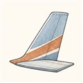
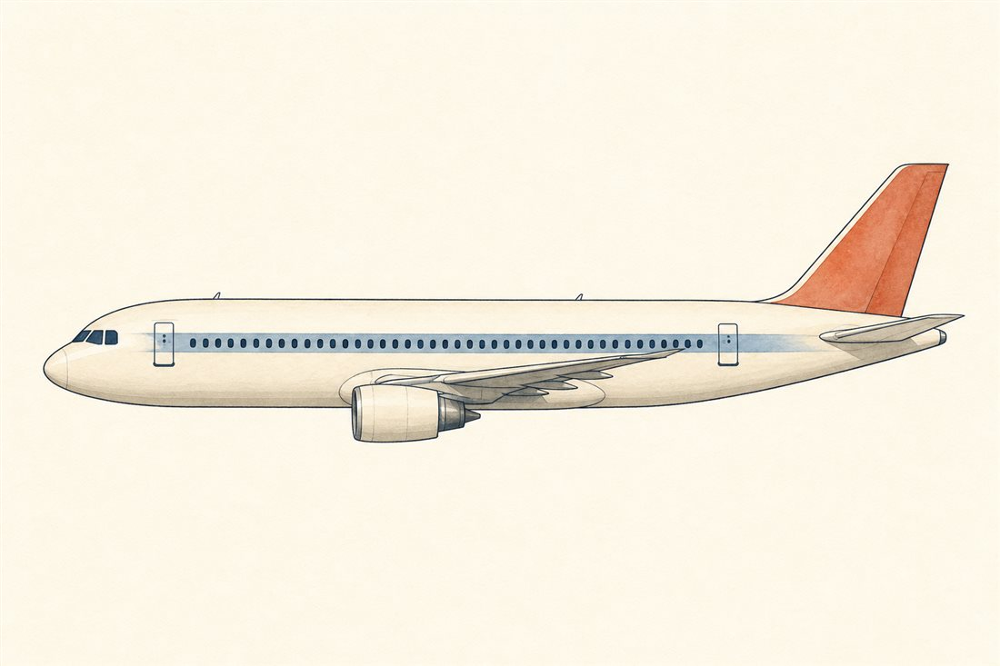

第2巻 だい3わ ── きたいの章きたいは、そらの やじろべえ
浮かせる力の話が2話続きました。でも揚力だけでは、飛行機は作れません。持ち上げる力が重心とずれていたら、機体はくるりと回ってしまう。飛ぶことの半分は釣り合いを保つことです。紙飛行機の先っぽにクリップを付けると急に素直に飛ぶようになる——あの小さな実験に、今日の話が全部入っています。
機体をやじろべえだと思ってください。支点が重心、左右の腕が主翼と尾翼。旅客機はふつう「主翼が持ち上げ、水平尾翼がわずかに下向きに押さえて帳尻を合わせる」釣り合い（トリム）で飛んでいます。そして「乱されても自分で戻る」性質——安定——は、重心が機体全体の釣り合い点より前にあることから生まれる、これとは別の話。似て非なるふたつの仕掛けを、図で見分けてください。

もうひとつの「ぜんたい」の疑問がこちら——なぜどの旅客機も、判で押したように高度1万m・マッハ0.8前後で飛ぶのでしょう。低くても高くても損をする、その挟み撃ちを見てください。
よりみち「もどる」の仕組みと、重心の管理
突風で機首が持ち上がったとします。機体全体の迎え角が増えると、重心より後ろにある尾翼の揚力がより大きく増えて、機首を押し下げる——ばね付きのやじろべえです。この復元が働く条件は「重心が中立点（機体全体の空力中心）より前にあること」。前にあるほど安定は増しますが、尾翼の押さえ荷重が増えて燃費は損。だから旅客機は、乗客と貨物の配置・燃料の使い順で重心位置を管理しながら飛んでいます。貨物の積み付け計算が資格を持つ専門職の仕事なのは、それが文字どおり命に関わる計算だからです。
よりみちマッハ0.8で止まる理由 — 音の壁の手前
第1話を思い出してください——翼の上面の流れは機体より速い。つまり機体がマッハ0.85でも、上面の流れはすでに音速を超えています。局所的な超音速域が衝撃波で閉じると、造波抗力という新しい税金が急激に立ち上がる（抗力発散）。ここが実質の「壁」です。壁を少し遠ざける知恵が後退角——翼を斜めに置くと、翼が感じる実効的なマッハ数が下がります。旅客機の翼が後ろへ流れているのは、速く見せるためではなく、マッハの壁を後ろへずらすためです。
 流体屋のためのノート
流体屋のためのノート
ブレゲーの航続距離式です。ロケット方程式と同じ対数構造——「燃料を積むほど、その燃料を運ぶための燃料が要る」が、空気吸い込み機関でも同じ形で現れます。違いは係数: ロケットのveの席に、飛行機ではV·(L/D)/cが座る（cは推力あたりの燃料消費率、いわゆるTSFC）。旅客機のL/Dは17〜20——翼で浮くことの巨大な配当で、推力そのもので自重を吊るロケットにはこの梃子がありません。燃費の桁違いの正体はここです。「なぜ1万m・M0.8か」の正体は、V(L/D)/cを最大化する高度・マッハ・CLの連立最適化の解にすぎません。エンジン側の答え（cを小さくする戦い）が、次話からの主戦場です。
{kind=link}
・J. D. Anderson, Introduction to Flight, 8th ed.（安定と釣り合い・ブレゲー式）
・巡航高度・速度: Wikipedia "Cruise (aeronautics)"（31,000〜38,000ft・M0.78〜0.85）
・後退角と抗力発散: Anderson, Fundamentals of Aerodynamics, ch.11